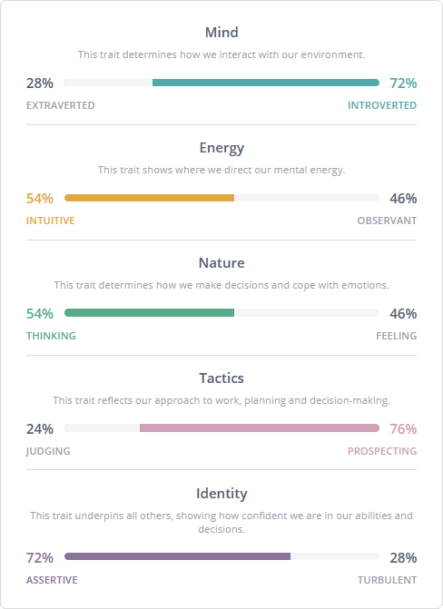
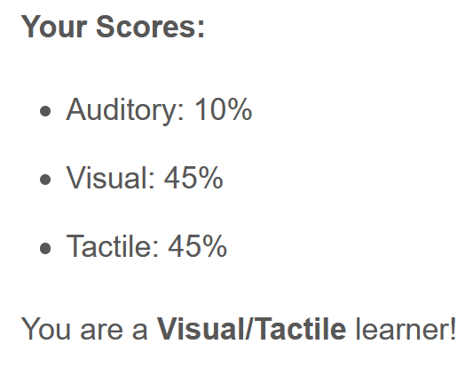
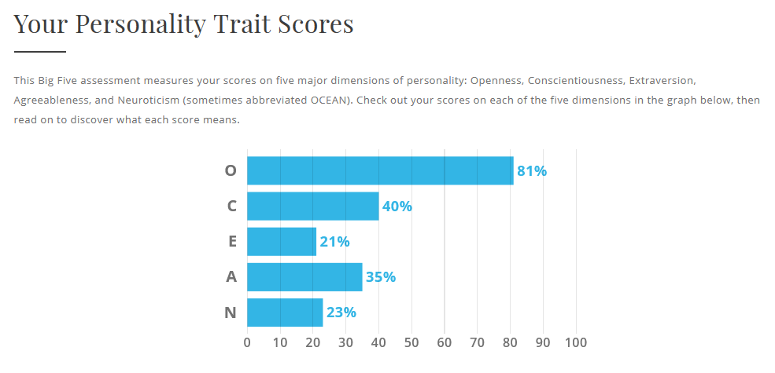

About Me
Hi! My name's Chris, and I'm studying my first year of IT at RMIT. I've got a Polish background, though I barely speak Polish and am instead learning French. In high school I enjoyed Systems Engineering and Mathematical Methods classes, and have been using my programming skills throughout.
I use arch btw
Not really, I'm just a Mint normie...
Personality Quizes
|  |  |  |
| Sauce | Sauce | Sauce |
While I like to think of myself as being open to suggestions, and try to consider other viewpoints as much as I can, I must admit that I always liked things going my way - or at least correctly.
I doubt I'd be able to work effectively in a team of people who don't care for details and present half-working models as finished products, or who cannot accept a more efficient method of doing something or even look from different perspectives.
Rather, I must be interacting with others who are willing to sacrifice practicality for the sake of efficiency and are open to learning better ways of doing things, but would also patiently allow others like me to learn things for themselves. The biggest obstacle I find in forming a team, however, is my lack of social skill; until I get to know someone I will avoid casually talking with them. Ultimately, I believe working with a diverse group of people, with different approaches to things, will benefit myself and the group most.
Why I'm Here
From a young age I was interested in computers and video games, always wanting to make a game of my own. With the help of my dad, I learned how to use electronics fluently and slowly began experimenting with our old laptop.
Like most students in my primary school, my first experience with real programming began with a simple visual language. Noticing I had a knack for coding, I moved on to writing simple Just BASIC1 scripts and much later becoming known in a small game-making community2. Of course, I was playing many video games during this time, and not only did building Minecraft mechanisms3 help me learn how software works but another game4 even inspired me to learn C#, opening the door to real-world languages. At the moment I'm writing Bash5 and Python6 terminal scripts, and have the experience to solve most problems with StackOverflow7.
I ultimately decided to come to RMIT because it specializes in what I want to do in the future. Although I have worked on some group projects in the past, I still need to learn how to effectively work in real, professional teams. I'm looking forward to writing programs with people as passionate as I am.
My Ideal Job
My "ideal job" would be to work with a group of my friends on making games, or programming software in general, rather than for any company. There would be a variety of jobs I could undertake, ranging anywhere from managing the project to actually writing code - but this, being able to self-manage and work on whatever I feel necessary, is what makes working for myself so appealing. I'll not only get to learn different things, but I can even completely avoid having to call in sick or have to make excuses for myself. Ultimately I'm hoping I'll end up making enough to support myself without too much stress or having to work elsewhere.
Of course, I feel far from ready to take on serious coding work. While I am able to solve problems and write code, being comfortable with troubleshooting issues and excelling in past programming clases, my only real experience with coding something as a team is by having worked on a Discord bot8, all the while running into communication errors. I have yet to learn how to motivate myself to keep working on really large projects where I may encounter a road block, too, but I think a sense of commitment will come with working with others.
All in all, I feel I will be much more prepared to code professionally after having completed my RMIT course, where I will be practicing all of those things. I'm excited, and a bit nervous, to be working with a team of new people in just a few more weeks and in the years to come.
Intro to My Project Idea
While playing video games, I usually crank the volume up and play music, or sometimes I put a YouTube video on another monitor. Occasionally I may even put on my VR headset and become fully immersed in the game world, but while this increases the enjoyment of using a computer, I also get jumpy when I see someone walk into my room from the corner of my eye - in some cases I may not even notice people until they stand right next to me, and start panicing to pause the game and everything else.
Thus, I introduce: Automatic Game Pauser! Using an Arduino9 or another microcontroller to detect a door opening, a gesture or keybind, the script may automagically decrease the volume of the system, pause media playback, or do anything else one may need to take notice of the real world for once in their lives!
Detailed Description
Though this idea is simple in principle, I believe it will require quite a bit of work to realize because of its configurable nature - users need to be able to specify which applications to minimize, whether to pause playback, how much to decrease the volume, or possibly even what inputs to automatically simulate, not to mention what to restore and when (if the door closes, or if a keybind is necessary). This would need to be effectively visualized and easily modified - modifiable action elements in a listbox would suffice - and actions performed on programs may need to be recorded by the software as typing names may be tedious or impossible for non-technical users.
Additionally, triggering of the system must allow a large variety of options for the sake of accessibility; users who do not have an Arduino9 and some kind of sensor for detecting the opening of a door must be able to quickly activate the system though other means, perhaps with a mouse gesture or keybind. Scripts for microcontrollers may need to be supplied with the script to properly send messages to the host computer through serial communication or wirelessly, or if users don't know how to set something up. Optionally, triggers should have the functionality to trigger other triggers or even change the state of other actions, which will allow the creation of complex rules if necessary. All of this should managed and configured from within the software.
Creating a system that allows users to manage actions and controls will be a bit of a task, but should be feasible using object-oriented programming. Implementation and interfacing with various programs will also be a challenge, however can definitely be accomplished with libraries such as pyautogui10 for Python6.
Skills & Tools
All the tools and materials I need for this project are:
- A sensor & an Arduino9
- An overly-complicated Python6 script
- A computer on which to run the program (duh)
However, the skills necessary to utilize this technology are a fair bit more extensive:
- GUI design & creation with
tkinter11 - Window management with
pyautogui10 - Enabling/Disabling of triggers, or the entire program
- Object-oriented programming for managing inputs & actions
- Configuration saving to a file
- Configuration loading from a file
- Serial or wireless communication between microcontrollers and the script
- Acting upon an electrical signal
- Detecting a key combination on Windows, or when a command is run on Linux
Project Outcome
In conclusion, this project should allow a user to set up actions, such as window minimization, media control, a notification, etc., and manage triggers for said actions with serial messages or a key combination. These factors should combine and perform user-defined tasks such as pausing media when a door is opened. The solution's success may be measured by how fast it responds to someone walking through a door, whether the user becomes aware of this event, and whether the intruder sees that the user is minimizing windows from their view.